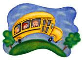

Field Trips
Let the Museum customize a visit for your group! Please contact the Education Department at 860-443-2545 x110 or email clarke@lymanallyn.org for more information or to make a reservation.

Field Trip Option #1: $4.00/student
This hour-long option is available Tuesday-Friday, 9:45am-4pm.
This field trip, which can be customized to meet K-12 curriculum standards, includes a welcome to the museum and an hour-long guided tour of the permanent collection or special exhibition of your choice. Teachers and 5 chaperones are free of charge. Groups may bring bag lunches to eat on the lawn or in the museum's orientation space for an additional half hour.
Field Trip Option #2: $6.50/student
This two-hour long option is available Tuesday-Friday, 9:45am-4pm
This field trip, which can be customized to meet K-12 curriculum standards, includes a welcome to the museum, an hour-long guided tour of an exhibition of your choice and an hour-long, hands-on art class (each students leaves with their own finished work of art) in the museum's studio. Art project options include:
- Acrylic painting on canvas board -Sculpting with clay and/or wire
- Printmaking
- Tribal Rainstick Workshop
- Whaling Ship Collages
- Or let us customize a project to complement your classroom studies.
Field Trip Option #3: $6.50/student
This two-hour long option is available Tuesday-Friday, 9:45am-4pm
This field trip, which can be customized to meet K-12 curriculum standards, includes a welcome to the museum, an hour-long guided tour of an exhibition of your choice and an hour-long writing project. Students will learn how to write about art and then try their hand at composing an essay, story or poem about a work of art in the galleries. Teachers and 5 chaperones are free of charge. Groups may bring bag lunches to eat on the lawn or in the museum's orientation space for an additional half hour.
*Special reduced rates are available for New London Schools
New London schools may visit the museum unguided for free anytime (this option requires one chaperone for every ten children). Please contact the museum's education department for special reduced pricing on guided tours and art workshops: 860-443-2545 x110 or clarke@lymanallyn.org
Yellow Bus Fund
The Lyman Allyn Art Museum believes that funding should not be a factor when it comes to the cultural enrichment of the region's school children. Through the Yellow Bus Fund, we are pleased to cover the expense of buses for schools that would normally find this cost prohibitive when planning a visit. Because of overwhelming interest in the Yellow Bus Fund, the Lyman Allyn will provide a full subsidy for the cost of transportation for New London public schools. The museum will provide a 50% subsidy for the cost of transportation for schools in New London County and 25% subsidy for schools coming from outside New London County. In the interest of extending this benefit to as many students as possible, the Museum has limited the use of the Yellow Bus Fund to schools that bring a minimum of 40 children per bus. The subsidy is paid for bus trips from your school directly to the museum and back to your school with no additional stops.